HIST 270 · History of China · Chapter 2 · Lecture 4
Cosmos, Spirits, and Chu
Patterns, demons, and the south
4th–3rd centuries BCE · Yin and Yang · The World of Spirits · Chu, Inside and Apart Background essay ↗
A Chu shaman in a dragon-prowed boat under the first stars; one bank in sunlight, one in shadow. AI-generated interpretation, not a historical record.
Cold open · A sickroom in Chu · 316 BCE
In 316 BCE a Dying Chu Official’s Diviners Blamed Angry Spirits
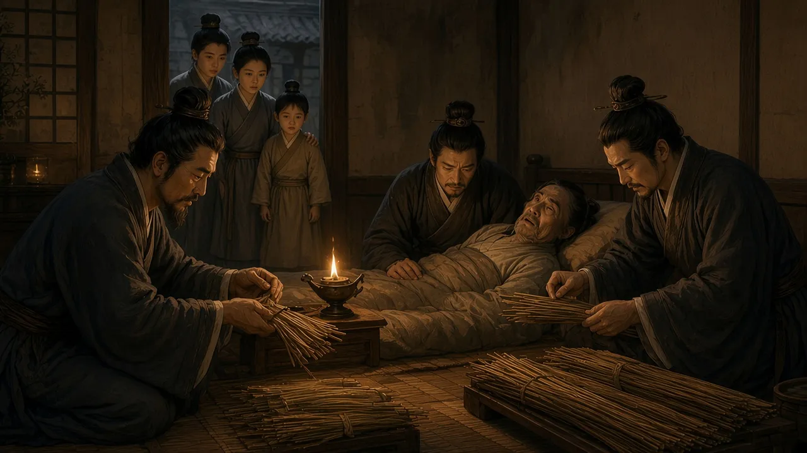
Two diviners kneel beside a sick Chu official’s bed, laying out bundles of divining stalks on a mat, while his wife and son wait anxiously in the doorway. AI-generated interpretation, not a historical record.
The patient. A high Chu official fell gravely ill.
The diviners. They asked turtle shells and stalks what was wrong.
The diagnosis. Unsatisfied spirits or demons were causing the illness.
The cure. Exorcisms, and sacrifices to the star god Taiyi.
Names box: Chu, Taiyi, Shao Tuo
×
Names box
Chu (choo): the great southern state of the Eastern Zhou, centered on the middle Yangzi River (p. 33).
Taiyi (ty-ee), “Grand One”: a god of the stars who received sacrifices (p. 32).
Shao Tuo (shaow twoh): the Chu official buried at Baoshan in 316 BCE. His name comes from the bamboo records in his tomb, not from your textbook.
Sources: Ebrey, Ch. 2, pp. 32, 34; Baoshan tomb 2, Hubei, divination records.
Start here · How to study this deck on your own
Three Segments, Self-Checks, and an Open Study Buddy Button Guide You Through This Deck
A college student with headphones studies at night; on her laptop glows a painted river scene with a dragon-prowed boat under the stars. AI-generated interpretation, not a historical record.
Click Open Study Buddy (lower right) or press N for each slide's Study Buddy notes.
Work through three segments; each ends with a self-check.
Two Reading Guide checkpoints follow the segments that teach them.
Click a teal dotted word for a definition; the Pierian Spring is required study.
Arrow keys move; Esc shows a slide map. All due dates are on Canvas.
×
Qi
Qi (chee): vapors or forms of energy that make up and move through the world and the body (p. 32).
You will meet it again on the yin and yang slides.
Popups like this one close with Esc, the × mark, or a click outside the card.
Sources: Ebrey, Ch. 2, pp. 32–35.
Roadmap · Three segments, two questions
Three Segments Follow Nature, the Spirits, and a Southern Kingdom
I
Reading Nature
Yin, yang, qi, the stars and the Five Phases. Question 10.
II
The World of Spirits
Diviners, Taiyi, demons and a travelers’ ritual. Question 10.
III
Chu: Inside and Apart
Counties, lacquer, tombs and the Songs of Chu. Question 11.
The thread: New ideas joined old ones without erasing them, in thought and in Chu.
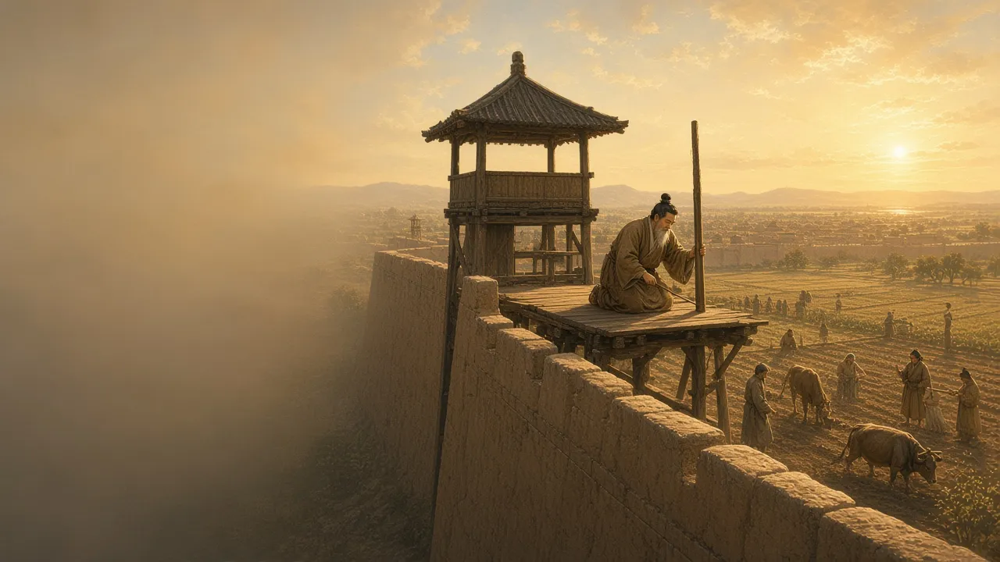
Segment 1 of 3 · Act I · 4th–3rd centuries BCE
Reading Nature
Some thinkers looked past rulers and spirits to the patterns of the sky, the seasons and the body.
At dawn, an old astronomer on a city-wall tower marks the shadow of a tall pole while, in the fields below, farmers begin the spring planting. AI-generated interpretation, not a historical record.
Q10 story · More than a hundred schools · 4th–3rd centuries BCE
Natural Philosophers Studied the Sky, the Body, Music and the Calendar
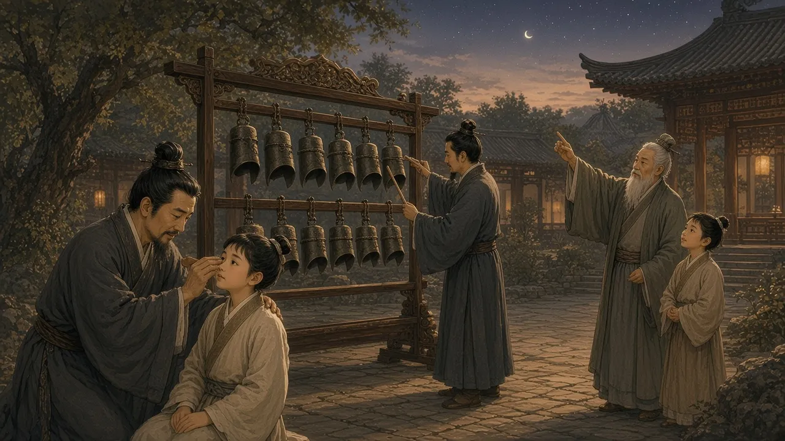
In a palace garden, a physician examines a seated patient, a musician strikes a row of bronze bells, and an old astronomer points up at the evening sky. AI-generated interpretation, not a historical record.
Old view. In Chapter 1, the Shang believed spirits sent rain, war and illness.
Many schools. Logicians, hermits, farmers, and natural philosophers too.
Their fields. Astronomy, medicine, music and calendar calculations.
Their tools. Yin and yang were especially important to them.
Concept: Yin and Yang Are Partners in Every Change, and Qi Is the Energy That Moves
Concept
Yin · Yang · Qi
Yin: dark, receptive, yielding. Yang: bright, assertive, strong. They are complementary poles, two halves of one whole. Qi (chee): vapors or forms of energy.
Q10 story · Cycles · day and night, summer and winter
Yin and Yang Explained Why Day Turned to Night and Summer to Winter
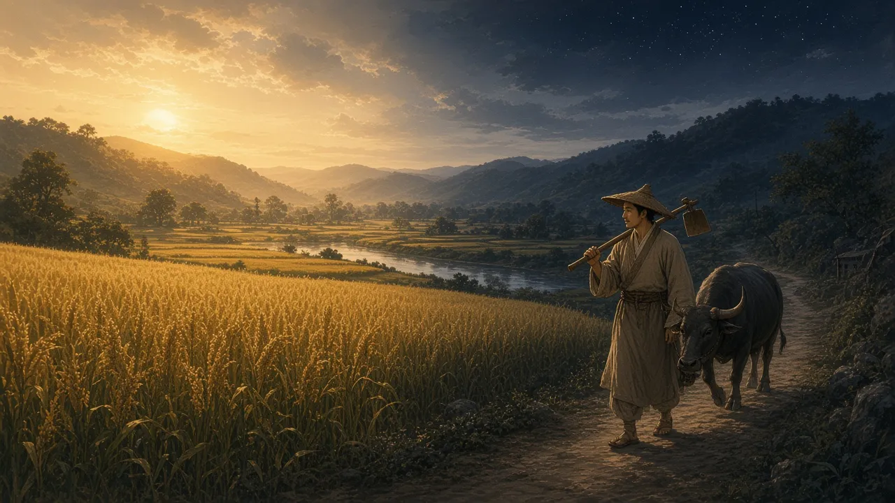
At sunset a farmer drives his ox home through a valley: one hillside glows gold in the last sun, the other already lies in cool blue shadow. AI-generated interpretation, not a historical record.
Day and night. The movement of yin and yang turns day into night.
The seasons. It also turns summer into winter, and back again.
Health. Yin and yang were involved in health and illness too.
A pattern. Change follows cycles, not the whims of spirits.
Sources: Ebrey, Ch. 2, p. 32.
Q10 story · A duke’s sickbed · Zuo zhuan, 541 BCE
Physician He Blamed a Duke’s Illness on Six Kinds of Qi, Not on Ghosts
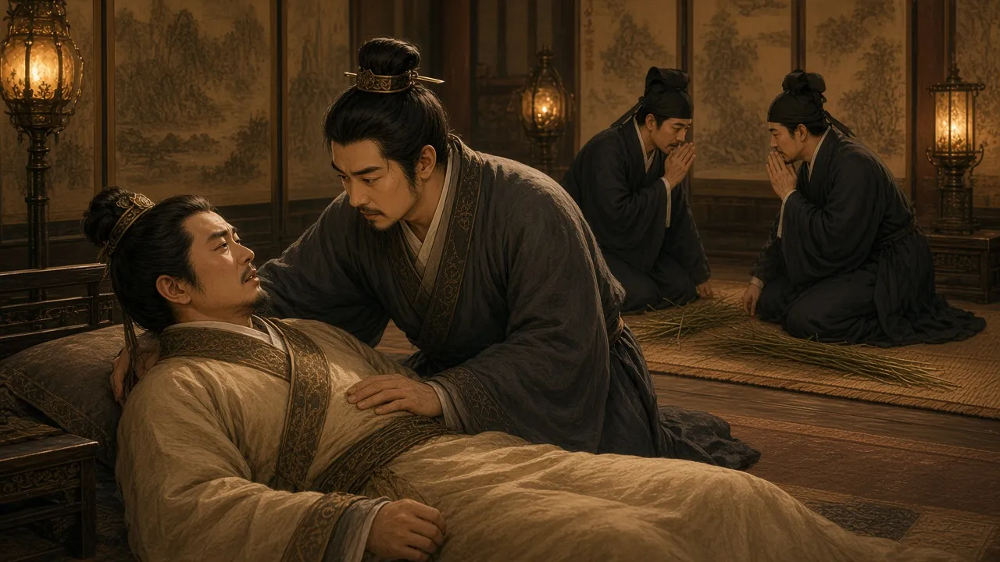
A visiting physician kneels to examine the sick Duke of Jin, while behind them two court diviners whisper over bundles of divining stalks. AI-generated interpretation, not a historical record.
Six qi. Yin, yang, wind, rain, dark and bright.
Order. They divide into the four seasons, five colors and five sounds.
Excess. When any one goes too far, it causes one of six illnesses.
Same court. Diviners there had blamed spirits for the same illness.
Names box: Physician He, Zuo zhuan
×
Names box
Physician He (huh): a doctor from the state of Qin, known only from the Zuo zhuan. “He” is his personal name (p. 32).
Zuo zhuan (dzwoh jwahn), “Zuo’s Tradition”: a long narrative history of the Spring and Autumn period, 722–468 BCE, written down in the Warring States.
Sources: Ebrey, Ch. 2, p. 32; Zuo zhuan, Duke Zhao, year 1 (541 BCE).
Q10 story · Astronomy and music · tomb of Marquis Yi of Zeng, ca. 433 BCE
A Southern Lord Was Buried with the Night Sky Painted on a Lacquer Box
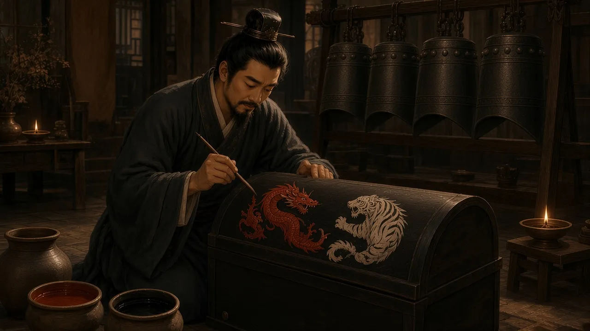
By lamplight, a lacquer painter brushes a red dragon and a white tiger around a ring of stars on the black lid of a wooden chest. AI-generated interpretation, not a historical record.
The tomb. Marquis Yi of Zeng, buried about 433 BCE, in Chu’s orbit.
The sky box. Its lid shows the Dipper ringed by the 28 star groups.
Dragon and tiger. The eastern and western sky became animals.
Tuned bronze. His 65 bells show music measured with precision.
Sources: Ebrey, Ch. 2, p. 32; tomb of Marquis Yi of Zeng, Suizhou, Hubei, excavated 1978 (Hubei Provincial Museum).
Q10 story · The Five Phases · Zou Yan, ca. 305–240 BCE
Zou Yan Taught That Five Phases Took Turns Ruling Nature and History
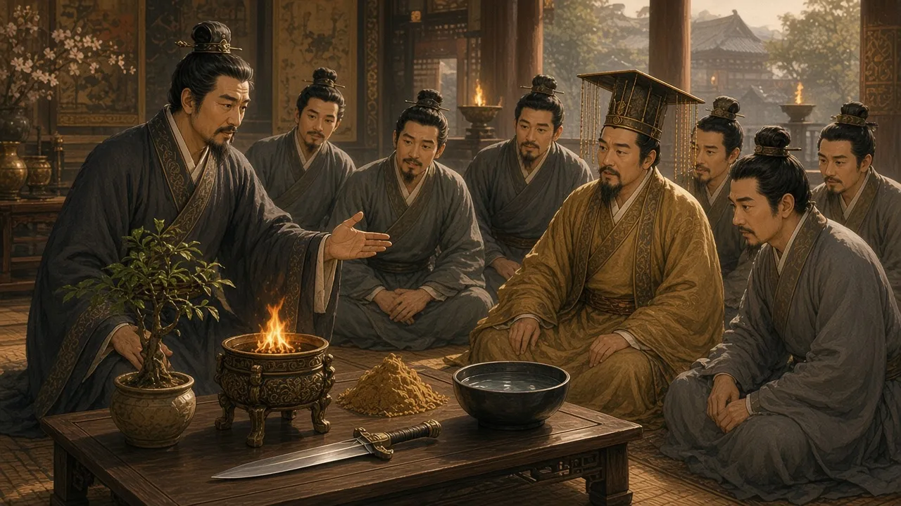
At the court of Qi, the thinker Zou Yan gestures toward five things set before the king: a green sapling, a burning brazier, a mound of yellow earth, a bronze blade and a bowl of water. AI-generated interpretation, not a historical record.
Five phases. Wood, fire, earth, metal and water.
Cycles. Each phase gives way to the next, like the seasons.
Everything matched. Colors, directions and seasons fit the five.
History too. Dynasties rose and fell as the phases turned.
Yin and yang did not chase the demons away. People still sacrificed, divined and exorcised.
At night, a masked exorcist waving a peach-wood bow leads villagers with torches and drums around a farmhouse. AI-generated interpretation, not a historical record.
Q10 story · Old beliefs, new ideas · 4th–3rd centuries BCE
Explaining Nature Did Not Make People Stop Fearing Spirits
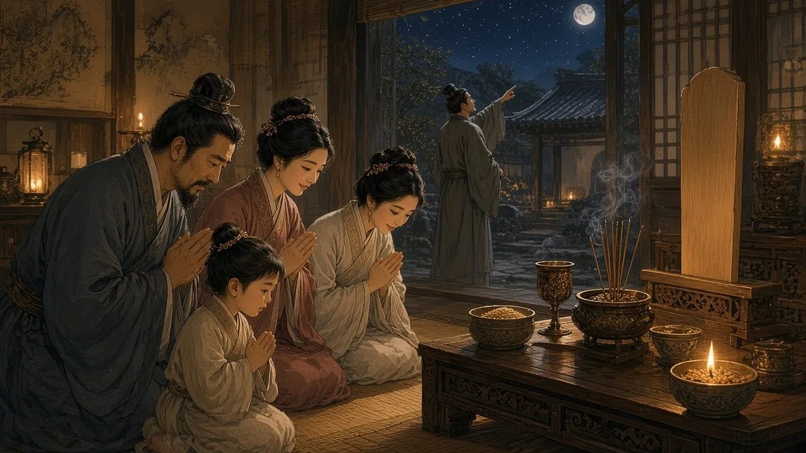
A family kneels with offerings of grain and wine before a household altar, while through the open door an old scholar in the courtyard studies the night sky. AI-generated interpretation, not a historical record.
Not either-or. Naturalistic thinking grew, yet spirits mattered as much as ever.
Spirits. Ancestors, nature gods and demons could all harm or help.
Confucius. He sacrificed to spirits “as though present.”
Specialists. Diviners and exorcists still had plenty of work.
Concept: Magico-Religious Practices Used Ritual to Make Spirits Help or Leave
Concept
Magico-religious practice
Rituals, spells, charms and sacrifices meant to persuade spirits (religion) or force hidden powers (magic) to help, or to go away.
Divination. Asking spirits what is wrong, or what will happen.
Sacrifice. Feeding a god or ancestor so it will help you.
Exorcism. Driving a harmful spirit or demon away.
Spells and charms. Words and objects that protect without asking.
Sources: Ebrey, Ch. 2, p. 32.
Q10 story · The Baoshan records · 318–316 BCE
The Sick Official’s Diviners Asked Again and Again, Then Fed and Fought the Spirits
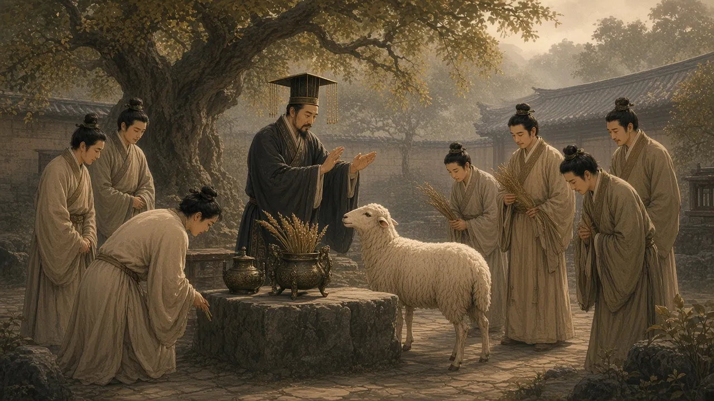
A priest offers a sheep on an outdoor altar to the Chu ancestors while the sick official’s son bows behind him and a diviner holding bundles of stalks looks on. AI-generated interpretation, not a historical record.
Asking. Diviners cracked turtle shells and counted stalks, year after year.
Diagnosis. The trouble came from spirits: ancestors, gods or the unhappy dead.
Feeding. Sacrifices went to Taiyi, other gods and Chu’s ancestors.
Fighting. Exorcisms drove off what sacrifice could not satisfy.
Sources: Ebrey, Ch. 2, p. 32; Baoshan tomb 2 divination and sacrifice records.
Q10 story · The Grand One · 4th century BCE
Taiyi, the Grand One, Was Both a Star God and the Source of the Cosmos
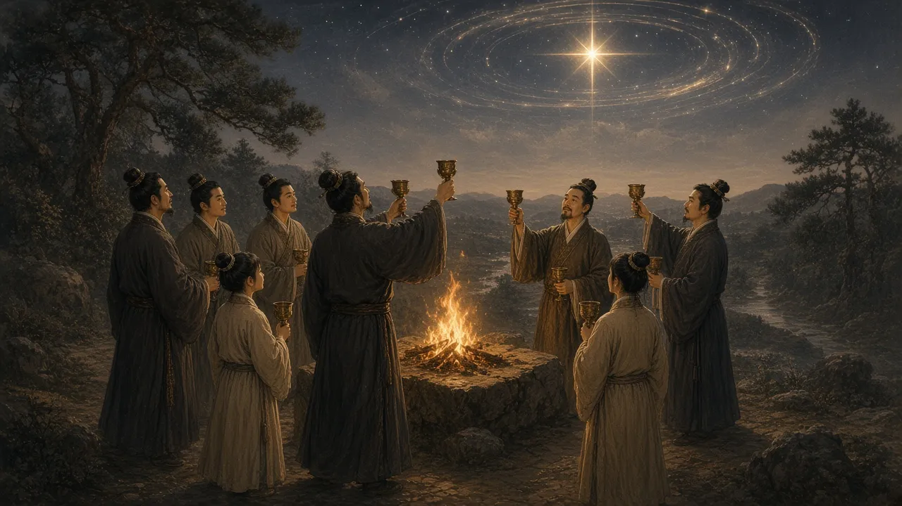
On a hilltop at night, priests raise cups of wine toward the bright pole star, around which the whole sky seems to turn. AI-generated interpretation, not a historical record.
A god. Taiyi, the Grand One, received sacrifices as a star god.
A first cause. A Chu text said the Grand One gave birth to water.
Then the rest. Heaven, earth, yin and yang and the seasons followed.
Both at once. The same Grand One was worshipped and theorized.
Sources: Ebrey, Ch. 2, p. 32; Taiyi sheng shui (“The Grand One Gave Birth to Water”), Guodian tomb 1, ca. 300 BCE.
Q10 story · Spells against demons · 3rd century BCE
Spellbooks Taught People How to Drive Demons Out of Their Homes
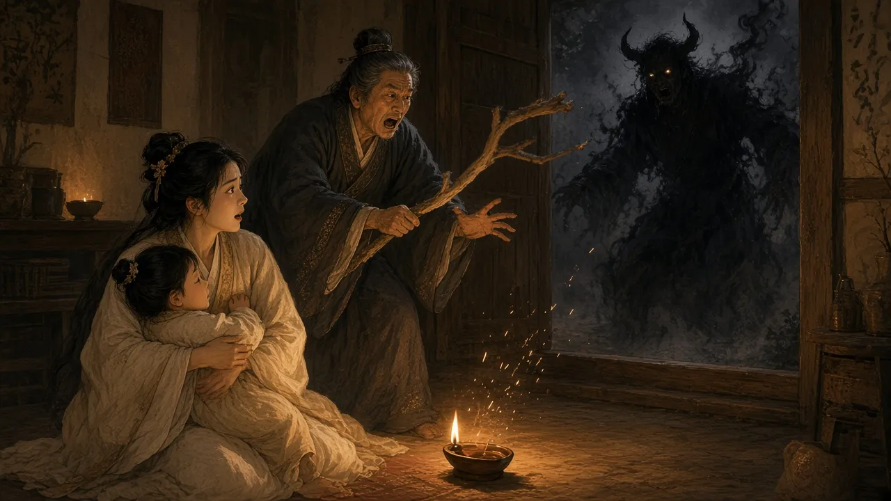
Inside a farmhouse at night, a mother shields her child while an old woman shouts and swings a peach-wood branch at a shadowy horned demon in the doorway. AI-generated interpretation, not a historical record.
Incantations. Some texts gave words to shout at offending demons.
A demon list. A Qin almanac named dozens of demons and their cures.
Home remedies. Peach wood, loud noise and simple objects drove them off.
Protection. Ceremonies kept evil spirits away before they struck.
Sources: Ebrey, Ch. 2, p. 32; Shuihudi tomb 11 almanac (Rishu), Hubei, ca. 217 BCE.
Q10 story · Leaving the city · a travelers’ ritual
Before a Trip, Travelers Drew Five Lines at the City Gate and Called on Yu
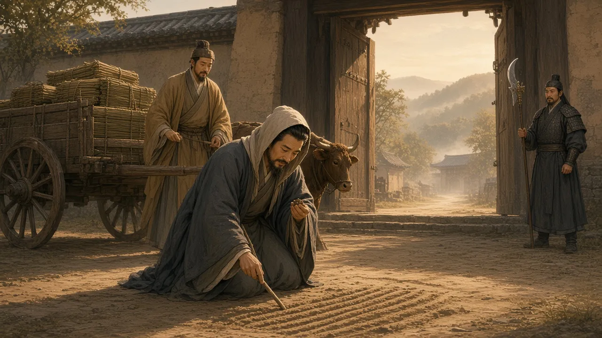
At a city gate at dawn, a traveler kneels on the threshold to draw five lines in the dirt with a stick, a pinch of soil in his other hand, while his companion waits with a loaded ox cart. AI-generated interpretation, not a historical record.
The place. The threshold of the city gate, just before leaving.
The words. Call on the sage-king Yu to clear the road.
The lines. Draw five lines on the ground.
The soil. Tuck soil from the lines into your robe, near your heart.
Sources: Ebrey, Ch. 2, p. 32; Shuihudi tomb 11 almanac (Rishu), ca. 217 BCE.
Q10 story · Two ways of knowing · in the same books
Yin-Yang Thinking and Spirit Rituals Lived Side by Side, Even in the Same Books
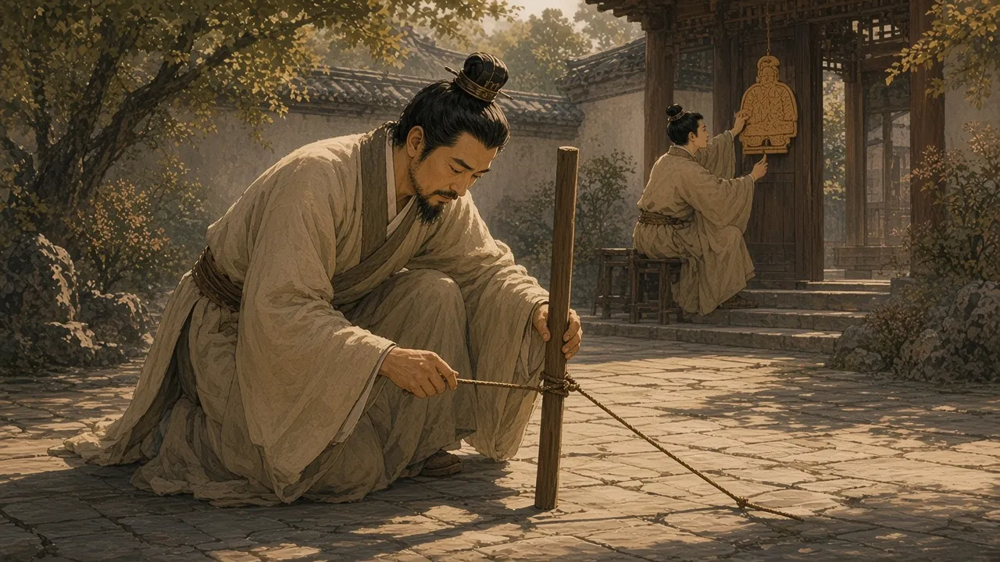
In his courtyard at noon, an old scholar measures the shadow of a pole, while at the gate behind him a servant hangs a peach-wood charm against demons. AI-generated interpretation, not a historical record.
Same writing. Spell books were copied and passed on like philosophy books.
Same tombs. Officials were buried with calendars, almanacs and spells.
Same people. A Jin court heard spirits and qi blamed for one illness.
The result. New ideas joined old practices; they did not replace them.
Discuss the evolution of thought regarding the natural world and the spirit realm during the late Zhou period. How did concepts like yin and yang interact with traditional spiritual and magico-religious practices?
The great southern state joined the Zhou world, yet never stopped being itself.
A fleet of dragon-prowed Chu boats crosses a misty southern lake past reed marshes, red-and-black banners streaming. AI-generated interpretation, not a historical record.
Q11 concept · Core and periphery
Concept: The Core Saw Itself as the Center; the Periphery Was Pulled In but Never Erased
Concept
Core · Periphery
The core is the region that sees itself as the center of a civilization. The periphery is the edge, drawn into the core’s world while keeping some of its own ways.
The core. The old central Zhou states along the Yellow River.
The periphery. Edge peoples, like Chu in the south.
Drawn in. Through the Eastern Zhou, edge peoples joined the Zhou world.
Not erased. Joining did not wipe out cultural difference.
Chu Swallowed Fifty States and Was First to Govern New Land Through Counties
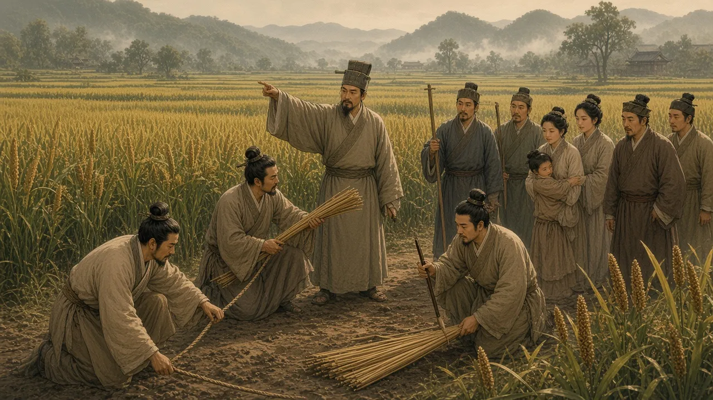
Chu officials with measuring cords survey newly conquered fields, while villagers watch and an appointed magistrate in a plain cap supervises. AI-generated interpretation, not a historical record.
Expansion. Chu absorbed fifty or more small states, pushing north and east.
548 BCE. It surveyed its population to assess taxes and military duties.
Counties. First to turn new land into counties run by officials.
A full player. By the 3rd century, a full member of the balance-of-power alliances.
In a northern courtyard, Mencius sternly scolds a young student and points away from a rough-dressed southern teacher working with a hoe in the field beyond the wall. AI-generated interpretation, not a historical record.
Still outsiders. Central states called Chu primitive or barbarian.
Mencius. He scolded a man for following a teacher from Chu.
His words. Chinese ways should change barbarians, never the reverse.
The irony. Chu was by then a great power of the Zhou world.
Wet Southern Tombs Preserved the Silk and Lacquer That Rotted Elsewhere
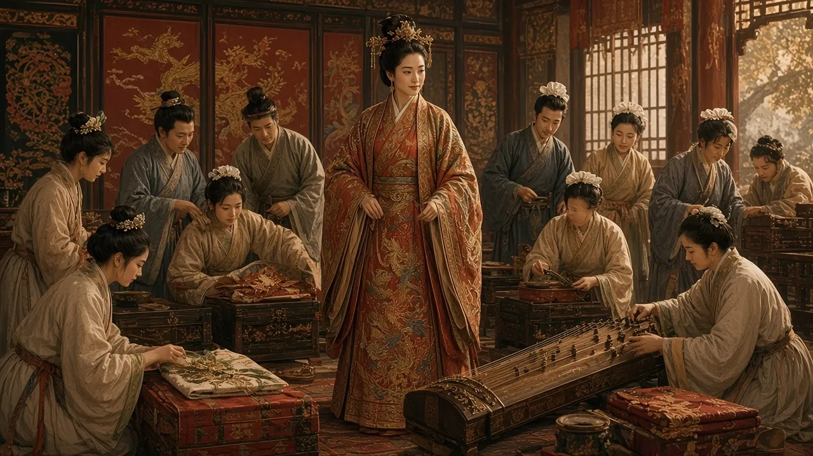
A Chu noblewoman in a silk robe embroidered with swirling dragons and phoenixes watches her maids pack red-and-black lacquered boxes and folded silks for a tomb. AI-generated interpretation, not a historical record.
Most tombs. About 70 percent of known Eastern Zhou tombs are in the Chu area.
High water. Wet ground sealed tombs, so silk and lacquer survived.
Elite life. A remarkably full picture of how Chu’s elite lived.
Chu style. Flowing, curving lines with birds, dragons and snakes.
Sources: Ebrey, Ch. 2, p. 33.
Q11 story · Material culture · lacquer
Chu Craftsmen Turned Tree Sap into Light, Shining, Waterproof Lacquer
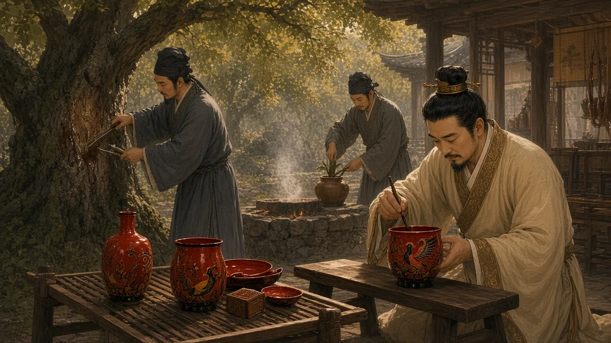
In a Chu workshop, craftsmen tap a lacquer tree for sap, heat it in a pot, and brush red and black layers onto cups painted with two great birds. AI-generated interpretation, not a historical record.
The sap. From a tree native to south and central China.
The process. Heated and purified, then brushed on in many layers over wood.
The result. Light, strong, smooth, waterproof and slow to decay.
The colors. Cinnabar for red, carbon for black: cups, coffins, instruments.
Sources: Ebrey, Ch. 2, p. 33 (Material Culture: Lacquer).
Q11 story · Baoshan, Hubei · 316 BCE
The Sick Official’s Four-Chamber Tomb Held His Furniture, Fans and Books
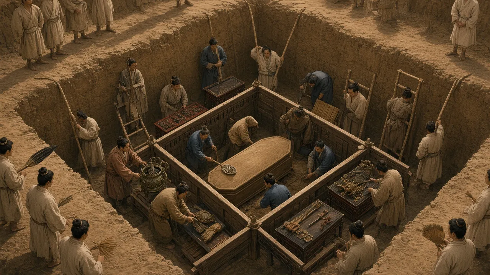
In 316 BCE, workers lower lacquered boxes, bronze vessels, fans and bundles of bamboo books into the four timber chambers of a deep tomb. AI-generated interpretation, not a historical record.
The tomb. Excavated in 1986–1987 at Baoshan, for an official who died in 316.
Four chambers. Ritual vessels, furniture, fans, mirrors, weapons, chariot fittings.
Books. Local government reports, divination texts and an inventory.
A puzzle. Elegant writing, but many characters are still undeciphered.
Qu Yuan’s Songs of Chu Flew on Spirit Journeys Unlike Any Northern Poem
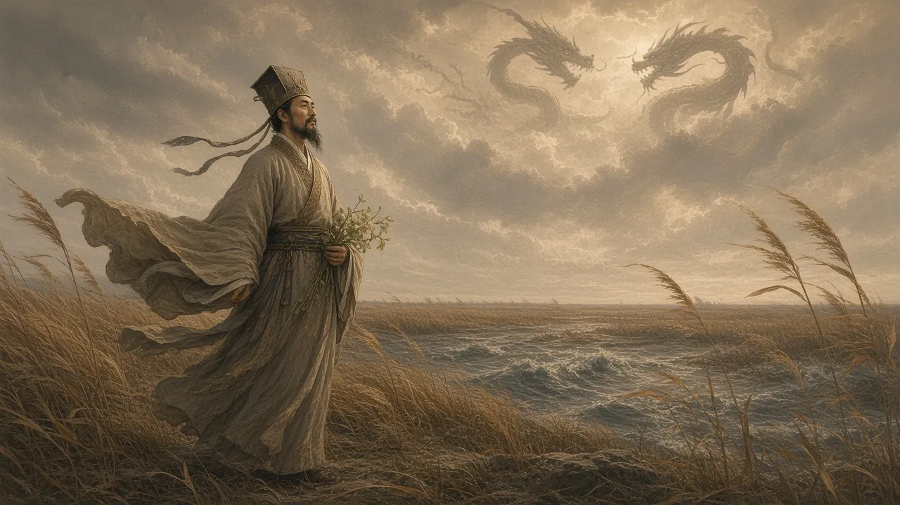
Qu Yuan, a gaunt exiled minister in long robes and a tall hat, stands alone on a windy riverbank, gazing up at clouds shaped like a dragon chariot. AI-generated interpretation, not a historical record.
The book. The Songs of Chu: fantastic poems unlike the northern Book of Poetry.
The poet. Qu Yuan, an anti-Qin minister exiled by the kings of Chu.
The poem. Encountering Sorrows: a cosmic quest for a worthy lord.
Its shape. Like a shaman’s spirit journey to find a god in heaven.
Qu Yuan (chyu ywan), ca. 340–278 BCE: Chu minister and poet; Qu was his clan, Yuan his courtesy name (p. 34).
Chu ci (choo tse), Songs of Chu, also translated Elegies of Chu (p. 34).
Li sao (lee saow): the Chinese title of Encountering Sorrows, also translated Encountering Sorrow.
Sources: Ebrey, Ch. 2, p. 34.
Q11 primary source · A spirit song · Songs of Chu
“We Will Ride My Coach of Waters, Hitched to Paired Dragons”
With you I will roam to the river’s nine channels, … / we will ride my coach of waters, its canopy, lotus, / hitched to paired dragons, by basilisks flanked. / I climbed Mount Kun-lun, I gazed all around, / the heart flew aloft, it went sweeping off free. … / My roofs are of fish scales, halls of the dragon, … / why is the holy one here, down in the water? / We will ride on white turtles, goldfish attend us …
“Lord of the Yellow River,” Songs of Chu, 4th–3rd century BCE, trans. Stephen Owen, as quoted in Ebrey, p. 34 (abridged).
A god’s palace. Fish-scale roofs and dragon halls under the water.
A wild ride. Dragons, turtles and goldfish carry the lovers.
Read closely. Who is speaking, and to whom? Compare a Book of Poetry song.
Basilisks: the translator’s word for a kind of hornless dragon. Kun-lun: a sacred mountain far to the west.
Sources: Ebrey, Ch. 2, p. 34; “Lord of the Yellow River,” Songs of Chu.
Self-check · Segment 3 · not graded
Check Yourself: Chu, Inside and Apart
Answer each question from memory, out loud or on paper, then click Show answer. Nothing here is graded or recorded.
1. How many small states did Chu absorb as it expanded?
Fifty or more, pushing north and east (p. 33).
2. What administrative step was Chu the first to take?
It formed counties (xian) from new land and sent officials to run them (p. 33).
3. What did Mencius say about following a teacher from Chu?
He had heard of Chinese ways transforming barbarians, not the reverse (p. 33).
4. Why did so much Chu silk and lacquer survive?
High water tables in the south preserved the tombs (p. 33).
5. What is the structure of Encountering Sorrows like?
A shamanic spirit quest to heaven for a god who spurned him (p. 34).
Evaluate the cultural relationship between the central Zhou states and peripheral southern regions like the state of Chu. How did Chu assimilate into the Zhou political sphere while maintaining its distinct cultural and literary identity?
Two sides: show how Chu joined the Zhou political world, then how it kept its own art, religion and poetry. Use at least two pieces of evidence for each side.
Archaeologists Opened the Sick Official’s Tomb and Found Both Worlds Inside
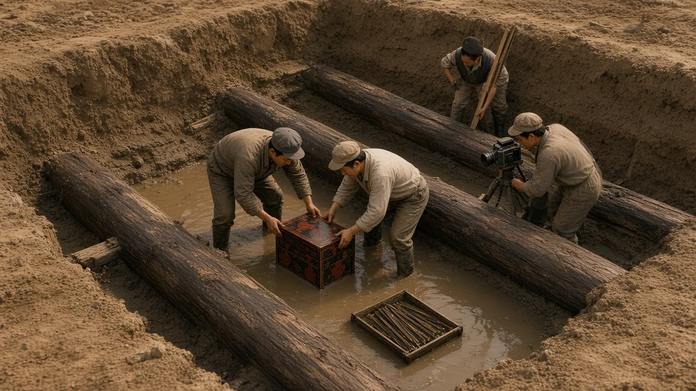
In 1987, archaeologists in muddy boots lift a waterlogged lacquered box from a timber tomb chamber at Baoshan while a colleague photographs it. AI-generated interpretation, not a historical record.
Q10. Divination records: yin-yang age, still seeking help from spirits.
Q11. Government reports and Zhou-style rituals in a Chu tomb.
Still Chu. Lacquer, curving designs and a script not fully read.
Next. Chapter 3: Qin conquers Chu and every other state.
Today's lecture ends here. Continue on your own: the stories below finish this chapter's history, and each ends with a review question to answer.
"A little learning is a dang'rous thing; Drink deep, or taste not the Pierian spring."Alexander Pope, An Essay on Criticism, 1711
Independent study · The other schools · 4th–3rd centuries BCE
A Farmer-Philosopher from Chu Said Even Kings Should Grow Their Own Food
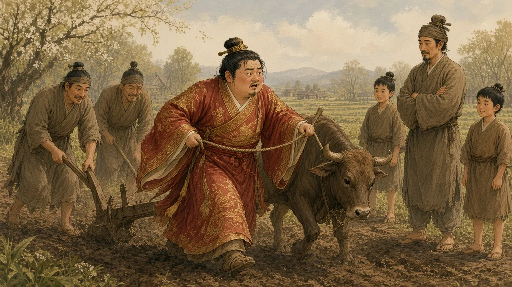
A ruler in fine robes awkwardly guides a plow beside barefoot farmers, while a lean teacher in coarse hemp clothes watches approvingly from the field’s edge. AI-generated interpretation, not a historical record.
Many voices. Logicians, hedonists, utopians, hermits and farmers argued too.
Xu Xing. A thinker from Chu: no one should eat who does not farm.
Kings too. Rulers should plow beside their people and cook their own meals.
Mencius. He mocked Xu Xing and his followers as southern barbarians.
Review question to answer · Q11
Evaluate the cultural relationship between the central Zhou states and peripheral southern regions like the state of Chu. How did Chu assimilate into the Zhou political sphere while maintaining its distinct cultural and literary identity?
Independent study · A Chu tomb near Changsha · ca. 300 BCE
A Painted Silk from a Chu Tomb Mapped the Months, Their Gods and Their Taboos
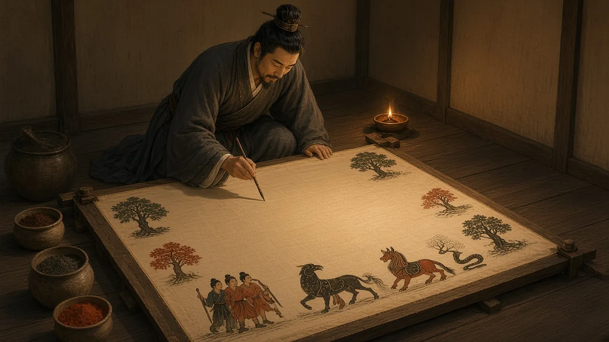
By lamplight, a Chu artist paints strange beings and colored trees around the edges of a square of silk, leaving the center blank. AI-generated interpretation, not a historical record.
The find. Looted from a Chu tomb near Changsha in 1942.
The design. Twelve strange figures for the months; trees in four colors.
The text. How the cosmos and seasons began, and what to avoid each month.
The journey. Taken to the US in 1946; fragments returned to China in 2025.
Review question to answer · Q10
Discuss the evolution of thought regarding the natural world and the spirit realm during the late Zhou period. How did concepts like yin and yang interact with traditional spiritual and magico-religious practices?
Sources: Zidanku silk manuscript, Changsha, Hunan; National Museum of Asian Art press release, May 16, 2025; Ebrey, Ch. 2, p. 32.
Independent study · On the Zhou border · 606 BCE
A King of Chu Asked How Heavy the Zhou King’s Sacred Cauldrons Were
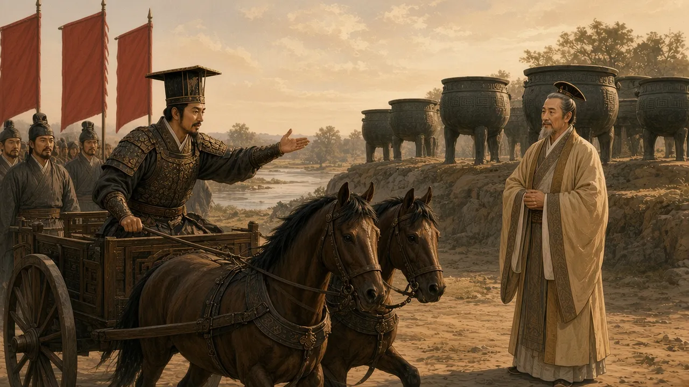
At the Zhou border, the armored king of Chu, his army behind him, leans forward to question a calm Zhou envoy who stands before nine great bronze cauldrons. AI-generated interpretation, not a historical record.
A display. In 606 BCE Chu’s army paraded at the Zhou border.
The question. King Zhuang asked the size and weight of the nine cauldrons.
The answer. It depends on virtue, not on the cauldrons; Heaven’s mandate stood.
Kings too. Chu’s rulers had called themselves kings since about 700 BCE.
Review question to answer · Q11
Evaluate the cultural relationship between the central Zhou states and peripheral southern regions like the state of Chu. How did Chu assimilate into the Zhou political sphere while maintaining its distinct cultural and literary identity?
Sources: Zuo zhuan, Duke Xuan, year 3 (606 BCE); Sima Qian, Shiji 40; Ebrey, Ch. 2, p. 33.
Independent study · A festival’s legend · from 278 BCE to today
Qu Yuan’s Death Became the Story Behind the Dragon Boat Festival
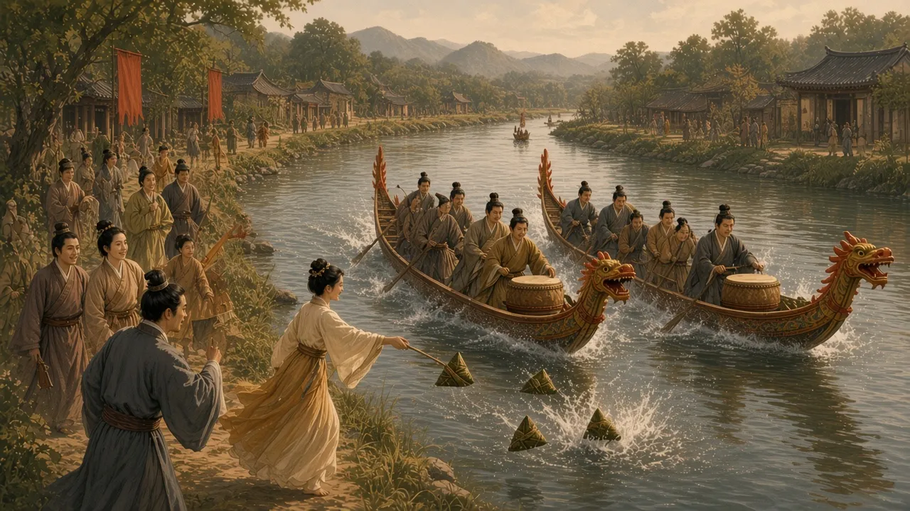
Rowers in long dragon-headed boats race down a river as drummers pound the rhythm and villagers on the bank cheer and toss leaf-wrapped rice dumplings into the water. AI-generated interpretation, not a historical record.
The death. Exiled, Qu Yuan threw himself into a river.
The legend. People raced boats to find him and save his body.
The dumplings. Rice in leaves was thrown in to feed the fish instead.
Today. Fifth day, fifth lunar month: boats, drums and zongzi.
Review question to answer · Q11
Evaluate the cultural relationship between the central Zhou states and peripheral southern regions like the state of Chu. How did Chu assimilate into the Zhou political sphere while maintaining its distinct cultural and literary identity?
Sources: Ebrey, Ch. 2, p. 34; Zong Lin, Jingchu suishi ji (6th century CE); UNESCO, Dragon Boat Festival (2009).
Sources and image credits
The Stories in This Deck Rest on These Sources
Your textbook
Patricia Buckley Ebrey, A History of China, Chapter 2, “Philosophers and Warring States During the Eastern Zhou Period (770–256 BCE),” pp. 32–35 (“Yin and Yang,” “The World of Spirits,” “Warring States Literature and Art: The Case of Chu,” Material Culture: Lacquer, and the Summary).
Primary texts quoted in the textbook
Zuo zhuan (Physician He); Mencius 3A.4; “Lord of the Yellow River,” Songs of Chu, trans. Stephen Owen.
Beyond the textbook
Zuo zhuan, Duke Zhao 1 (541 BCE) and Duke Xuan 3 (606 BCE). Sima Qian, Shiji 40 and 74. Baoshan tomb 2 divination records (1987). Taiyi sheng shui, Guodian tomb 1 (1993). Shuihudi tomb 11 almanac (1975). Tomb of Marquis Yi of Zeng (1978). Zidanku silk manuscript; National Museum of Asian Art press release, May 16, 2025. Zong Lin, Jingchu suishi ji.
Further reading
Donald Harper, “Warring States Natural Philosophy and Occult Thought,” in The Cambridge History of Ancient China (1999); Constance A. Cook, Death in Ancient China: The Tale of One Man’s Journey (2006); Constance A. Cook and John S. Major, eds., Defining Chu (1999). Full bibliography in the background essay.
Images
AI-generated cinematic interpretations in the Chapter 2 house style; not primary-source evidence. Each caption says so.